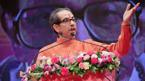

Bal Keshav Thackeray (Marathi pronunciation: Bal Thackeray]; 23 January 1926 – 17 November 2012) also known as Balasaheb Thackeray, was an Indian politician who founded the Shiv Sena, a right-wing pro-Marathi and Hindu nationalist party active mainly in the state of Maharashtra.[2]

Bal Keshav Thackeray (Marathi pronunciation: [Udhav thackeray]; 23 January 1926 – 17 November 2012) also known as Balasaheb Thackeray, was an Indian politician who founded the Shiv Sena, a right-wing pro-Marathi and Hindu nationalist party active mainly in the state of Maharashtra.